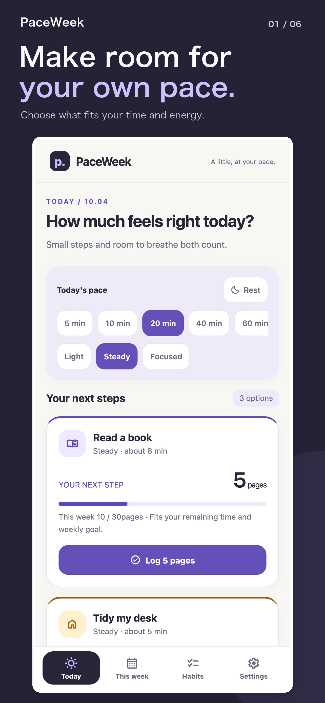
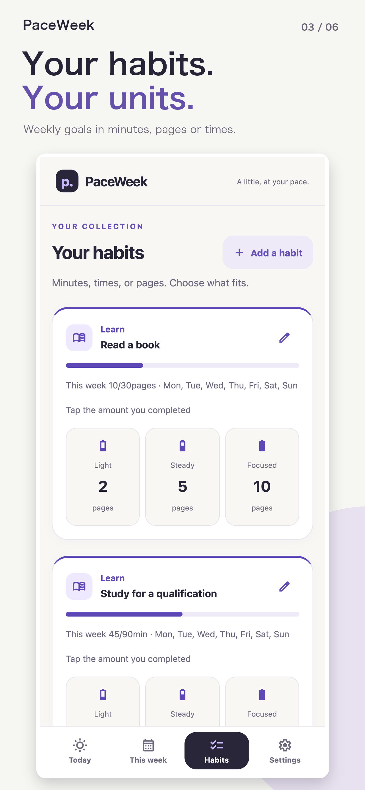
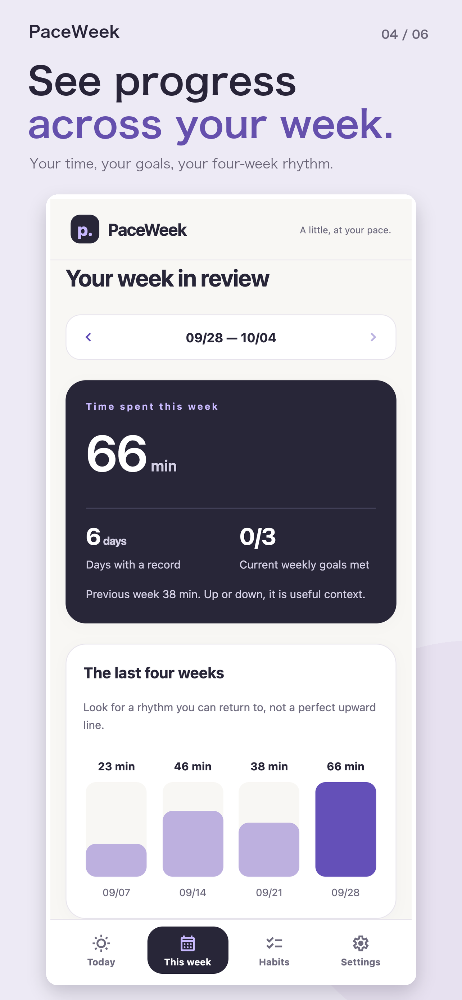

Choose from today’s time
Select 5, 10, 20 minutes and your energy level. PaceWeek shows options that fit.
A LITTLE ROOM FOR YOUR WEEK
Plans change. PaceWeek helps you choose a realistic amount for today from the time and energy you have, then look back on your week without chasing a streak.
Download free on the App StoreiOS 16.4 or later · Free · No account required

A habit tracker for changing schedules
When every day cannot look the same, a smaller option can keep a habit within reach.
Select 5, 10, 20 minutes and your energy level. PaceWeek shows options that fit.
Track minutes, pages, or times. Use a suggestion or choose your own amount.
See time spent, active days, goals, and rest days together.


YOUR WEEK, YOUR PACE
START SMALL, START FREE
PaceWeek for iOS is available on the App Store. The current release has no in-app purchases or subscriptions.
AVAILABLE ON THE APP STORE
Free / no in-app purchases
YOUR RECORDS, YOUR DEVICE
There is no cloud sync. Save a JSON backup somewhere safe outside the app before changing devices or uninstalling it.
Read how your data is handledBEFORE YOU START
No. PaceWeek is designed around a weekly goal and the amount that fits today. It does not guarantee habit formation or results.
No. Records are stored on your device. Uninstalling the app or a device failure can cause data loss, so save a JSON backup when needed.
No. Suggestions are calculated in the app from your goals, schedule, time, energy, and weekly progress.
Yes. The current release is free, with no in-app purchases or subscriptions. No charges start automatically.
The app does not automatically send your habit records to our servers. It has no cloud sync, ads, or analytics SDKs. You control where you save or share backups. See our Privacy Policy for support emails and information associated with visiting this website.
The released app is for iOS. This website provides information and support; a browser version of the app is not currently available.
MAKE ROOM FOR YOUR WEEK
Find a pace you can return to.
Download free on the App Store